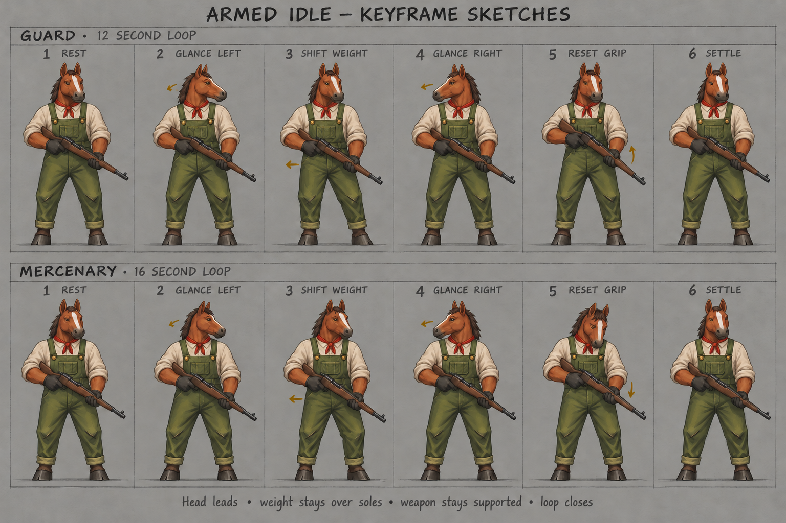

Armed idle · guards and mercenaries
Small shifts, watchful glances and a supported weapon.
Animal
Outfit
Weapon
Attitude
Guard · 12 s
Mercenary · 16 s
Pause
Restart
Study
Motion
Keyframes
Original sketches
View
Three-quarter
Side
Front
Rear
Scale
Close
Gameplay
Speed
1×
½×
¼×
Offset
Together
Staggered A
Staggered B
Loading painted character…
